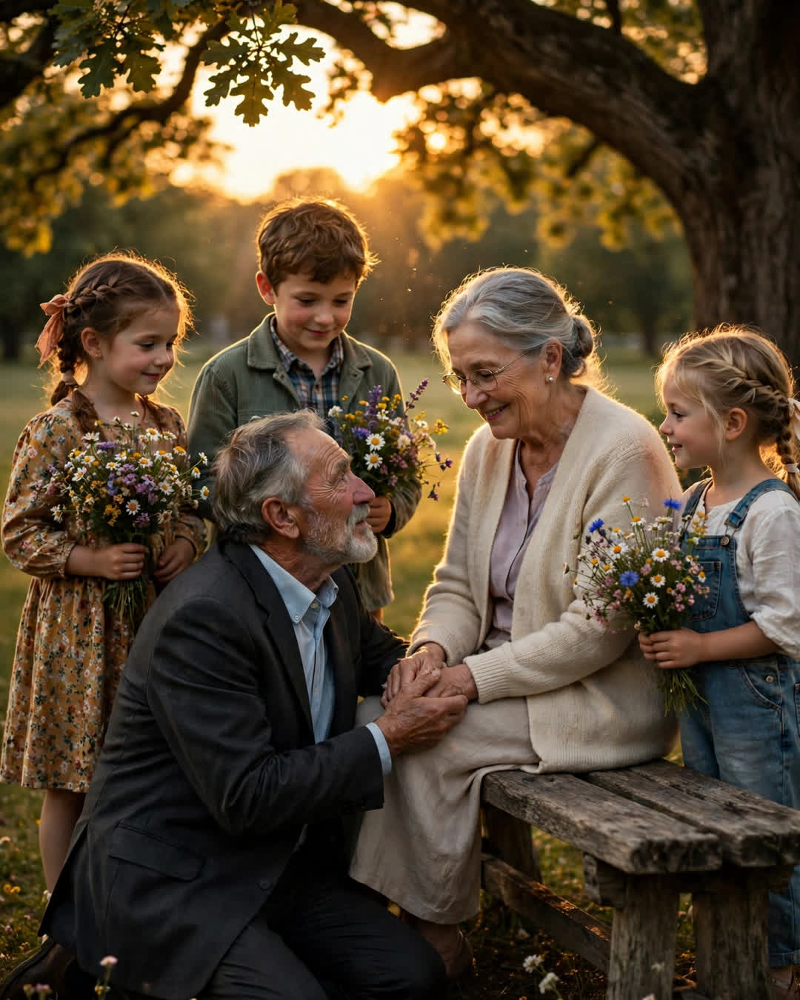

The Bench Vow
A Clipp Kaili original story

Seventy-five years old, and my grandfather got down on one knee in front of the same park bench where he had proposed in 1971. It nearly took two of us to get him back up.
The bench sits under the big oak at Miller Park, third one along the path, with one slat that has sagged since before I was born. Grandpa was a lifeguard at the pool across the grass that summer he was twenty, and Grandma was the girl who read books on that bench every day at four o'clock and pretended not to watch him do his rounds. He walked past that bench forty-one times, by his count, before he sat down.
He proposed at that bench in September, with a picnic he couldn't afford and a speech he'd written on an index card and then lost on the way there. Grandma has always said it was the best proposal in history precisely because he forgot every word and just sat there holding a sandwich, saying, "Well. It's you. It's always going to be you, I think."
They married that winter. The bench just stayed there, being a bench, while their life happened — five kids, a house they built room by room, Grandpa's hardware store, Grandma's thirty years teaching second grade. But every September, without fail or discussion, they'd walk to Miller Park in the evening and sit on that bench and split something — a sandwich, a thermos of coffee, an ice cream. My mother says she once asked, as a teenager, why they bothered. Grandma said, "Because that's where we decided. A person should visit the place where they decided the most important thing."
Last year, Grandpa started planning. Secretly. A man who cannot keep a surprise for one afternoon organized, over four months, with help from three generations, a vow renewal on that bench.
He called the family. He called the pastor from their church — the third pastor of their marriage, he joked. He had my cousin repaint nothing, touch nothing, because when someone suggested sprucing up the bench, Grandpa looked genuinely horrified. "That sag is ours," he said. "We earned that sag."
On a golden evening in September, fifty-four years after the lost index card, our whole family walked Grandma down that path — she thought it was a picnic — and there was the bench, and there was Grandpa in his good suit, down on one knee again, with the great-grandkids standing in a solemn row holding wildflowers they'd picked, mostly, from somebody's garden on the way.
"Patsy," he said, "I lost the speech again."
She laughed so hard she had to sit down on their bench to finish hearing him.
"I don't have new words," he said. "The old ones are still true. It was you. It is you. If there's anything after this, it'll be you. Will you keep me?"
She took both his hands and pulled — and half the family stepped in to help him up, and the great-grandkids cheered like it was a ball game, and my grandmother, seventy-five years old and crying in the September light, said, "Walter, I'll keep you. Same as always. Somebody has to split the sandwich."
The pastor said his words. The witnesses — ages four to nine — signed the certificate in crayon, which the county will just have to accept in our hearts.
Some couples renew their vows in cathedrals.
Mine needed one bench, one sagging slat, and fifty-four years of evenings — proof that the smallest place in the world can hold an entire marriage, if two people keep coming back to it together.
This story is a work of fiction, written to touch hearts and bring families closer.
← Back to all stories